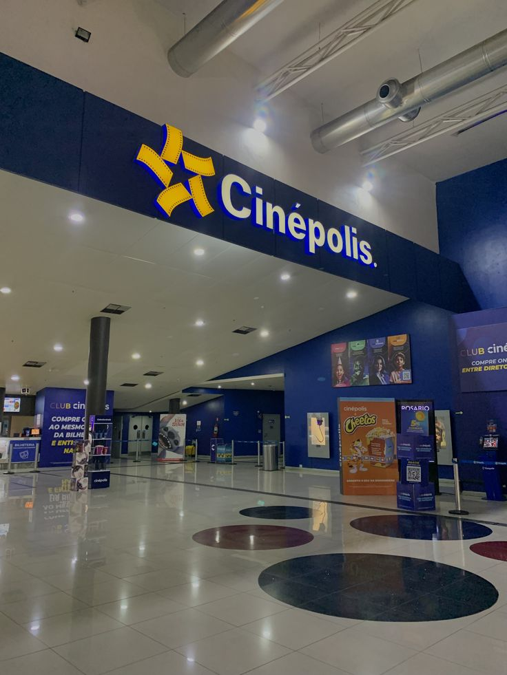

Mis vacaciones
Lugares que visité:
Cinepolis

Visitar Cinépolis
Playa El Tunco

El Parque Albania
Visitar el Parque Albania

Actividades que realicé:
En la playa El Tunco: Ese día nadé un poco, pero sobre todo fui a recolectar caracolas del mar.
En Cinepolis: fuí a ver la pelicula de Avatar 3, llore mucho, pero sinduda valio la pena.
En el Parque Albania: sinduda hice muchas actividades y entre ellas fue El Laberinto de Albania,
recuerdo que estuve como dos horas tratando de encontrar la campana y al final no lo
logré asi que tuve que pedirle al guia que me sacara porque tenia hambre.